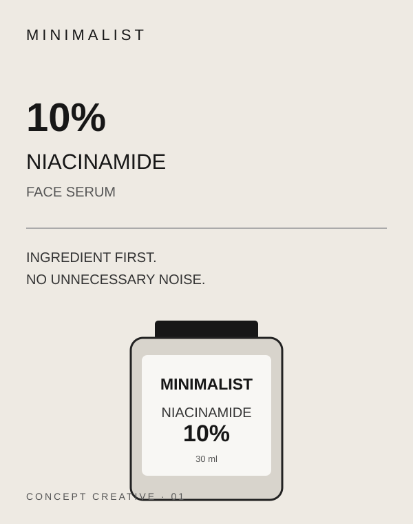
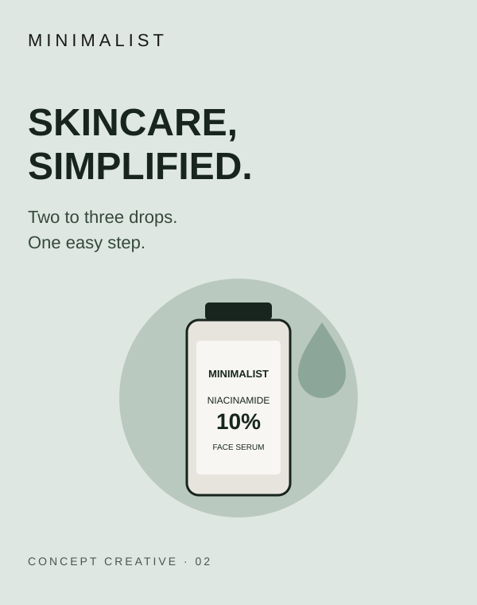
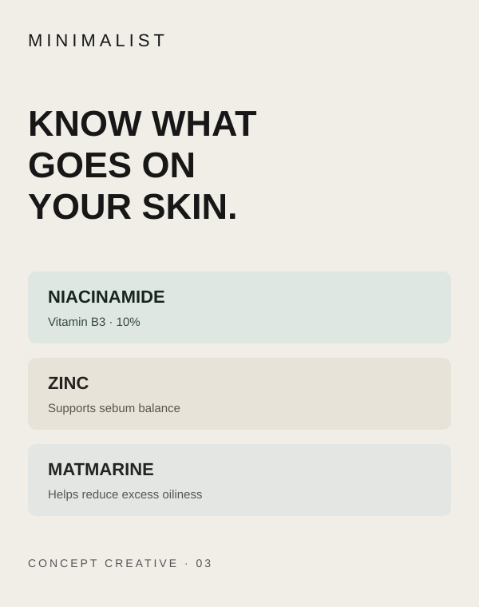

Campaign thinking / media / outcomes
Advertising
Campaigns.
Some campaigns I worked around from an advertising-intelligence and monitoring lens. Others I studied to understand the strategy behind the numbers. Different categories, different audiences — one question: what made the message work?
01 / NIKEWorked on · Campaign monitoring
Da Da Ding
Turning women’s sport into a cultural movement · India · 2016
Explore campaign breakdown
The challenge
Encourage young women in India to participate in sport, at a time when social expectations could discourage them from playing.
The idea & execution
Nike used a high-energy music video featuring Indian women athletes and cultural figures. The film was amplified through digital video, social, mobile, radio and music discovery platforms — making the message feel like a movement, not a conventional product ad.
My lens
Campaign monitoring and advertising intelligence: identifying brand creatives, tracking placements and understanding how a campaign idea travels across media. This is not a claim of creative production.
54MVideo reach
2MAudio streams
118KNike+ active users
02 / ONEPLUS × JIOSAAVNWorked on · Campaign monitoring
Hear the Difference
OnePlus Buds Z2 · Audio-first digital activation · 2023
Explore campaign breakdown
The challenge
Showcase noise cancellation in a way people could understand immediately, rather than simply listing a technical feature.
The idea & execution
An ASMR-style in-app audio ad on JioSaavn used the contrast between traffic noise and quiet to demonstrate the product benefit. The media idea made the listening environment part of the demonstration.
My lens
Campaign monitoring and creative/ad intelligence — looking at how the brand message, format and platform worked together. The reported results below belong to the campaign overall.
22MImpressions
2.4%Male CTR
2.0%Female CTR
03 / DMARTWorked on · Campaign monitoring
From Scroll to Store
Student sale · Local retail activation · Pune
Explore campaign breakdown
The challenge
Make a physical retail sale relevant to students online, then move that attention towards a landing page and store discovery.
The idea & execution
The case study describes mobile-first static ads and carousel GIFs, student-focused messaging, local targeting and a landing-page journey designed to connect digital interest with store intent.
My lens
Advertising intelligence and campaign monitoring: observing creative formats, messaging and distribution. The figures are published results from the agency case study, not numbers attributed to my individual work.
13.43LPeople reached
53KLanding-page clicks
55KPost engagements



04 / MINIMALISTAnalysed · Creative concept
Less, but better.
Niacinamide 10% Face Serum · Ingredient-led skincare · India
Explore campaign breakdown
The challenge
Skincare shoppers face crowded shelves and complicated claims. The opportunity is to make the product's purpose and key ingredients easy to understand at a glance.
The idea & creative direction
A three-part social campaign built around clarity: (1) lead with the active ingredient and its role, (2) show the serum as one simple step in a routine, and (3) explain the formula's oil-balancing positioning. Clean layouts, restrained colour and close-up product imagery keep attention on the formula rather than exaggerated promises.
Creative 01 — Ingredient first
“10% Niacinamide. No unnecessary noise.” A product-led visual that makes the active and its role the hero.
Creative 02 — Keep the routine simple
“Two to three drops. One easy step.” A routine-focused execution that makes usage feel straightforward.
Creative 03 — Know what goes on your skin
“Niacinamide + Zinc + Matmarine.” An ingredient breakdown that turns the formula into an easy-to-scan story.
What I took from it
The concept translates product information into three distinct content angles: awareness, usage and ingredient education. These are portfolio concepts, not official Minimalist advertisements, and no campaign performance is claimed.
05 / SOICAnalysed · Content-led growth
Making Markets Make Sense
SOIC — School of Intrinsic Compounding · Financial education
Explore campaign breakdown
The challenge
Make investing and business analysis easier to approach without reducing complex ideas to shallow tips or hype.
The content approach
SOIC builds its proposition around educational videos, webinars, research, industry deep-dives and investing case studies. Its content turns company results and market themes into structured learning for an investor audience.
What I took from it
A strong content brand earns attention by being useful and consistent. The editorial opportunity is to package complex research into clear hooks, accessible explanations and repeatable formats — while keeping financial claims responsible.
523KYouTube subscribers*
43.2MChannel views*
580Videos published*
*Third-party channel snapshot, checked 2 November 2026; not campaign-attributed results.
A note on attribution
“Worked on” refers to advertising-intelligence / campaign-monitoring exposure, not authorship of the original brand campaign. Public case-study metrics are attributed to the brands or agencies that reported them. “Analysed” marks independent case-study analysis. Supporting artwork on this page is original editorial illustration, not official campaign photography or brand creative.